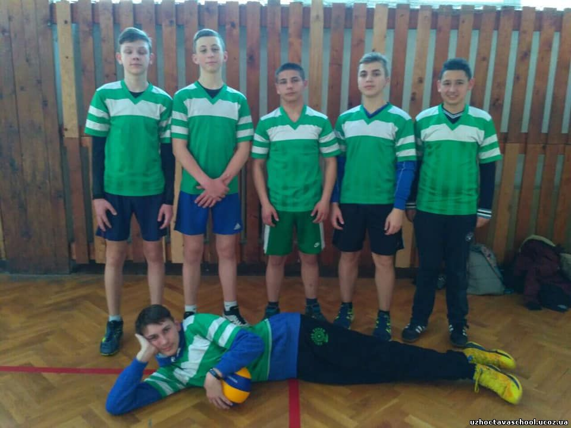
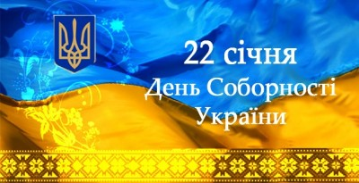
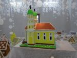
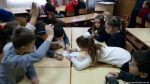
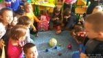

Шкільна газета
"Твіст"
Результаті змагань з волейболу
Вітаємо нашу команду з почесним ІІ місцем у змаганнях з волейболу.
День пам'яті жертв Голокосту
Міжнародний день пам'яті жертв Голокосту був встановлений Генеральною Асамблеєю ООН 1 листопада 2005 року в резолюції 60/7. Ініціаторами виступили шість країн: Ізраїль, Україна, Росія, Канада, Австралія і США. Співавторами були ще 90 країн. Генеральна Асамблея ООН закликала держави-члени розробити і проводити освітні програми, щоб уроки Голокосту назавжди збереглися в пам'яті наступних поколінь і сприяли запобіганню актів геноциду в майбутньому. Вперше День пам'яті жертв Голокосту провели 27 січня 2006 року.
День Соборності України

У єдності сила народу!
Боже, нам єдності дай.
З Днем Соборності України!
Допомога пернатим
Природі потрібні розумні помічники. У нашому Ужгороді не так вже й давно зимують лебеді. Вони є об’єктом підвищеної цікавості. Мешканці міста активно фотографують та підгодовують екзотичних птахів. Однак, замість допомоги, можуть лише нашкодити зимуючим у нас пернатим. Учні 2 - В класу досліджували цю проблему і вже добре знають, чи варто їх взагалі годувати та що робити, якщо настануть люті морози.
Фестиваль "Пряників"
Приємно, що у нашому місті є певні фестивальні традиції. І, серед них, найпривабливішим для передріздвяного настрою є, звичайно, фестиваль "Пряників". Казкова атмосфера, пряний дух імбиру, ванілі, кориці, цитрусових, гвоздики. Чудові рукотворні витвори майстрів печива та кондитерів. А ще - це можливість у такі, наповнені святістю і таїнством дні і вечори, можливість поділитися добром і пожертвувати благодійну суму волонтерам на благо поранених військових, безпритульних тварин, сцілення Крістіни Яремчук. У ці дні не забувайте і про своїх ближніх, які чекають бодай на ваш телефонний дзвінок.
Тиждень початкової школи
У рамках тижня початкової школи своєю майстерністю поділилася Ільченко О. В., яка разом з учнями 4-Б класу провела гру-урок "Найрозумніший". Цікаві завдання, групова та команда робота, музичний тур, охоплено різні галузі науки, спорту,мистецтва!Учні показали чудовий результат. Дякуємо 4-Б, ви - найрозумніші!
Космос очима першокласників
Ми дізналися що таке космос, планети, сузір'я, супутник, сонце, зорі.Чи може день наздогнати ніч? Всі ці питання цікавили першокласників цього тижня!